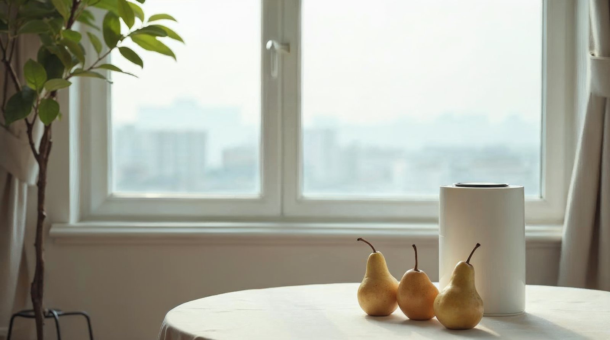
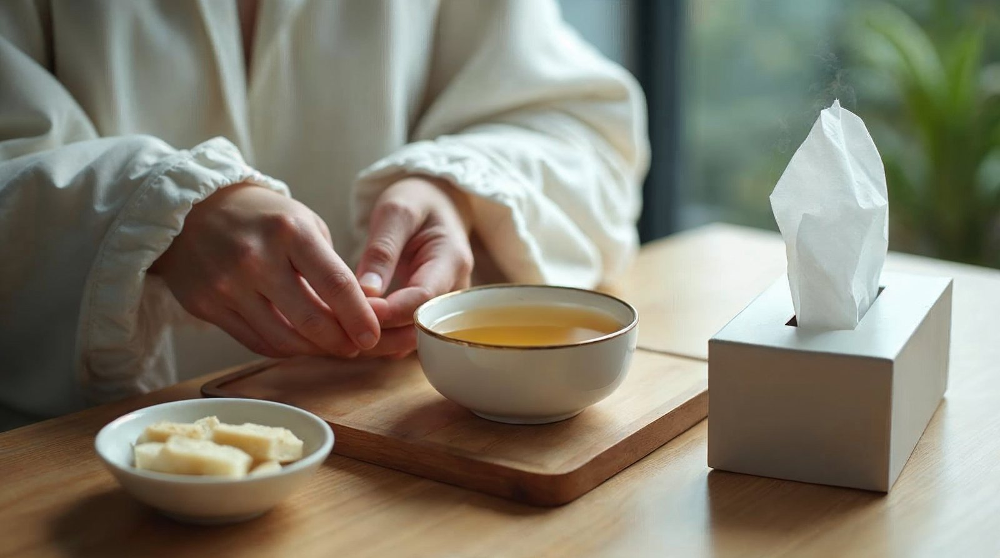
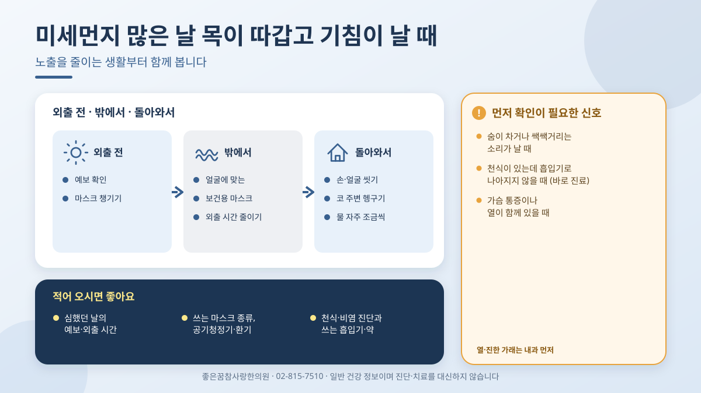

이종호 한의사 감수좋은꿈참사랑한의원 대표원장 (한의사 면허번호 19769)발행 2026-11-23 · 수정 2026-11-26
이 글의 차례
- 왜 이런 불편이 생길 수 있나요
- 왜 같은 날에도 사람마다 다르게 느낄까요?
- 감기나 다른 기침과는 어떻게 구분하나요?
- 먼저 이렇게 여쭙니다
- 스스로 점검해 보세요
- 상황별 예시
- 일상에서 먼저 해 볼 수 있는 것
- 먼지 많은 날 하루는 어떻게 꾸리면 좋을까요?
- 마스크는 어떻게 써야 제 역할을 할까요?
- 출퇴근길은 어떻게 다니면 좋을까요?
- 집에 돌아오면 무엇부터 할까요?
- 실내 공기는 어떻게 관리할까요?
- 목을 촉촉하게 지키려면 무엇을 마실까요?
- 자주 하는 오해는 무엇인가요?
- 밤에 기침으로 잠을 설칠 때는 어떻게 할까요?
- 먼지 많은 계절은 어떻게 준비할까요?
- 한의학에서는 먼지 날 목 불편을 어떻게 바라보나요?
- 한의원에서 함께 살필 수 있는 경우
- 첫 진료는 어떤 순서로 진행되나요?
- 다시 오셨을 때는 무엇을 비교하나요?
- 얼마나 지켜보고 언제 상담할까요
- 이렇게 기록해 오시면 상담이 쉬워집니다
- 이런 증상은 먼저 확인이 필요합니다
미세먼지가 심한 날 목이 따갑고 기침이 나는 것은 작은 먼지가 코와 목, 기도를 자극하기 때문인 경우가 많아, 노출을 줄이고 목을 촉촉하게 유지하는 것이 기본입니다. 봄과 겨울 미세먼지 예보가 '나쁨'인 날이면 한강을 끼고 있는 노량진과 흑석동 일대도 시야가 뿌옇게 흐려집니다.
이런 날 퇴근길을 걷고 나면 목이 모래를 삼킨 듯 깔깔하고, 집에 와서도 마른기침이 한동안 이어진다는 분이 많습니다. 하루 이틀이면 가라앉기도 하지만, 먼지 많은 날이 며칠씩 이어지는 계절에는 목이 쉴 틈이 없어 지치기 쉽습니다.
미세먼지는 내가 고를 수 없는 날씨입니다. 그래서 저는 먼지를 탓하기보다, 그런 날 내 목과 코가 덜 시달리게 하루를 어떻게 꾸릴지를 함께 정리하는 데 시간을 씁니다.
왜 이런 불편이 생길 수 있나요
- 아주 작은 먼지는 코에서 걸러지지 않고 목과 기도 깊숙이 들어가 점막을 자극할 수 있습니다.
- 건조한 계절에는 점막이 마른 상태라 같은 먼지에도 더 따갑게 느낄 수 있습니다.
- 천식이나 비염이 있는 분은 미세먼지 날 증상이 더 심해지는 경우가 많습니다.
- 한의학에서는 목이 자주 붓고 쉽게 피곤한 몸 상태도 함께 살핍니다.
왜 같은 날에도 사람마다 다르게 느낄까요?
같은 거리를 걸어도 어떤 분은 멀쩡하고 어떤 분은 목이 따갑습니다. 평소 코가 자주 막혀 입으로 숨을 쉬는 분은 먼지가 코에서 걸러지지 못하고 바로 목에 닿기 쉬워 더 예민하게 느끼는 경우가 있습니다.
물을 적게 마시고 커피를 여러 잔 마시는 날, 잠이 부족한 날에도 목 점막이 마르고 지쳐 있어 같은 먼지에 더 쉽게 반응하기도 합니다. 감기를 앓고 난 직후 몇 주는 기도가 아직 예민해 평소보다 기침이 잘 터지기도 합니다.
또 바깥에서 오래 일하는 분, 숨을 크게 쉬며 운동하는 분, 큰길가를 오래 걷는 분은 들이마시는 먼지의 양 자체가 많아집니다. 그래서 증상을 볼 때 그날 어디서 얼마나 숨을 쉬었는지를 함께 여쭙니다.
감기나 다른 기침과는 어떻게 구분하나요?
- 미세먼지 때문이라면 먼지가 심한 날 바깥에 있을 때 따갑고, 공기가 맑아지거나 실내에 오래 있으면 덜해지는 흐름이 많습니다.
- 감기는 콧물, 몸살 기운, 목 통증이 함께 오고 공기와 상관없이 며칠에 걸쳐 진행합니다.
- 먼지 날마다 재채기와 맑은 콧물, 눈 가려움이 함께 온다면 비염이 함께 자극받고 있을 수 있습니다.
- 먼지가 없는 날에도 마른기침이 3주 넘게 이어진다면 다른 원인을 확인할 필요가 있어 내과나 이비인후과 진료를 권합니다.

먼저 이렇게 여쭙니다
- 미세먼지 많은 날 외출 시간이 얼마나 되나요?
- 마스크는 어떤 종류를, 얼마나 밀착해 쓰시나요?
- 실내 환기는 언제 하시나요?
- 천식이나 비염이 있으신가요?
- 목이 따가운 느낌이 집에 돌아온 뒤에도 이어지나요?
스스로 점검해 보세요
- 미세먼지 예보를 보지 않고 외출하는 날이 많나요?
- 마스크를 쓰지만 코 위가 들뜨거나 턱 아래로 내려 쓰는 일이 잦나요?
- 하루에 마시는 물이 컵으로 다섯 잔이 안 되나요?
- 평소 코가 막혀 입으로 숨 쉬는 일이 많나요?
- 먼지 많은 날에도 바깥에서 달리기나 자전거를 타나요?
- 귀가한 뒤 옷을 갈아입지 않고 소파나 침대에 바로 눕나요?
- 먼지 날 목이 따가운 느낌이 다음 날 아침까지 남나요?
해당하는 항목이 있다면 마스크 쓰는 방법과 물 마시는 습관, 귀가 뒤 정리부터 바꿔 보세요.
상황별 예시
- 예를 들어 학원가에서 하루 종일 수업을 듣고 저녁에 걸어서 귀가하는 경우라면, 먼지가 심한 날만이라도 귀가 경로를 큰길보다 골목 쪽으로 바꾸고 마스크를 새것으로 갈아 써 봅니다.
- 예를 들어 배달이나 현장 일처럼 바깥에서 오래 일하는 경우라면, 쉬는 시간마다 물을 마시고 땀에 젖은 마스크는 바로 바꾸며, 집에 와서 코 주변을 헹구는 것까지를 한 묶음으로 정해 봅니다.
- 예를 들어 아침마다 한강변을 달리는 습관이 있는 경우라면, 예보가 '나쁨' 이상인 날은 집에서 하는 근력 운동이나 실내 걷기로 바꿔 봅니다.
- 예를 들어 비염이 있어 먼지 날마다 코가 먼저 막히고 이어서 목이 따가워지는 경우라면, 외출 전후로 코 주변을 헹구고 코로 숨 쉬는 시간을 늘리는 데 먼저 신경 써 봅니다.
- 예를 들어 집에서 요리를 자주 하는데 먼지 날이라 창문을 꼭 닫고 지내는 경우라면, 조리할 때는 후드를 켜고 조리 뒤 짧게 환기하는 것이 실내 공기에 도움이 됩니다.

일상에서 먼저 해 볼 수 있는 것
- 미세먼지 '나쁨' 이상인 날은 외출 시간 줄이기
- 외출할 때 얼굴에 잘 맞는 보건용 마스크 쓰기
- 돌아오면 손과 얼굴을 씻고 코 주변 헹구기
- 물을 자주 조금씩 마시기
- 외출 전 미세먼지 예보를 확인하고 마스크를 미리 챙기기
먼지 많은 날 하루는 어떻게 꾸리면 좋을까요?
아침에는 예보를 보고 꼭 나가야 하는 일과 미룰 수 있는 일을 나눠 보세요. 장보기나 산책처럼 시간을 옮길 수 있는 일은 먼지가 조금 덜한 날이나 시간대로 미루는 것만으로도 들이마시는 양을 줄일 수 있습니다.
낮에 실내에 있을 때는 한 시간에 한 번쯤 일어나 물을 마시고 목을 적셔 주세요. 사무실 창가 자리라면 창문을 오래 열어 두지 않도록 동료와 이야기해 두는 것도 좋습니다.
저녁에는 일찍 씻고 일찍 잠자리에 드는 날로 정해 보세요. 먼지에 시달린 목과 코는 잠자는 동안 회복할 시간이 필요합니다. 늦게까지 술을 마시거나 맵고 짠 야식을 먹는 일은 이런 날만큼은 피해 주세요.
마스크는 어떻게 써야 제 역할을 할까요?
보건용 마스크도 얼굴에 들뜨면 옆으로 공기가 새어 들어옵니다. 코 지지대를 콧등 모양대로 눌러 맞추고, 아래는 턱 끝까지 덮이게 쓰세요. 숨을 내쉴 때 안경에 김이 많이 서린다면 위쪽이 들떠 있다는 신호입니다.
한 번 쓴 마스크는 땀과 침으로 젖으면 걸러 주는 힘이 줄어듭니다. 오래 밖에 있는 날에는 여분을 챙겨 오후에 한 번 바꾸세요. 숨쉬기가 많이 답답하다면 무리하게 쓰기보다 바깥에 있는 시간을 줄이는 쪽을 먼저 고민해 주세요.
출퇴근길은 어떻게 다니면 좋을까요?
차가 많이 다니는 큰길가는 먼지가 더 짙은 경우가 많습니다. 먼지 예보가 나쁜 날에는 조금 돌아가더라도 차도에서 떨어진 길이나 공원 옆 골목으로 걸어 보세요. 버스를 기다릴 때도 차도 바로 앞보다 한두 걸음 안쪽에 서는 것이 좋습니다.
언덕길을 서둘러 오르면 숨이 가빠져 입으로 크게 들이마시게 됩니다. 이런 날은 평소보다 몇 분 일찍 나서서 천천히 걷고, 숨이 차기 전에 속도를 줄이세요. 지하철역이나 건물 안으로 들어가면 마스크 안쪽이 젖지 않았는지 한 번 확인해 주세요.
가방에는 작은 물병과 여분 마스크, 물티슈를 넣어 두면 하루 종일 바깥을 오가는 날에도 목과 손을 깨끗하게 지키기 쉽습니다.
집에 돌아오면 무엇부터 할까요?
현관에서 겉옷을 털고, 바깥에서 입은 옷은 침실이 아닌 곳에 걸어 두세요. 그다음 손과 얼굴을 씻고, 미지근한 물로 입안을 헹군 뒤 코 주변을 부드럽게 씻어 냅니다.
머리카락에도 먼지가 붙기 쉬워, 먼지가 심했던 날은 저녁에 머리를 감고 자는 것이 좋습니다. 씻고 난 뒤 따뜻한 물이나 차를 한 잔 천천히 마시면 칼칼했던 목이 한결 편하다는 분이 많습니다.
실내 공기는 어떻게 관리할까요?
먼지가 심한 날이라도 하루 종일 창문을 꼭 닫아 두면 요리 연기나 실내 먼지가 쌓여 공기가 탁해집니다. 예보를 보고 비교적 덜한 시간에 10분 안팎으로 짧게 환기하고, 공기청정기를 함께 켜 두세요.
바닥과 창틀은 마른걸레보다 젖은 걸레로 닦아야 먼지가 다시 날리지 않습니다. 난방으로 실내가 건조하다면 습도를 40~60% 정도로 맞춰 목이 덜 마르게 해 주세요.
목을 촉촉하게 지키려면 무엇을 마실까요?
물은 한꺼번에 많이 마시기보다 30분에서 한 시간 간격으로 몇 모금씩 나눠 마시는 것이 목을 적시는 데 도움이 됩니다. 미지근하거나 따뜻한 물, 카페인이 적은 차를 고르세요.
커피와 술은 몸의 수분을 빼앗기 쉬워 먼지 날에는 평소보다 줄여 보세요. 맵고 자극적인 음식도 따가운 목을 더 화끈하게 만들 수 있어, 그런 날 저녁은 순한 국이나 죽처럼 부드러운 음식이 편합니다.
자주 하는 오해는 무엇인가요?
- 삼겹살을 먹으면 목의 먼지가 씻겨 내려간다는 말: 기름진 음식이 기도의 먼지를 씻어 낸다고 보기는 어렵고, 오히려 속을 더부룩하게 할 수 있습니다.
- 집 안에 있으면 괜찮다는 생각: 창문을 오래 닫아 두면 요리 연기와 실내 먼지가 쌓이고, 바깥에서 묻혀 온 먼지도 그대로 남습니다.
- 마스크를 겹쳐 쓰면 더 잘 막아 준다는 생각: 두 장을 겹치면 숨쉬기가 힘들고 얼굴에 들떠 오히려 틈이 생기기 쉽습니다. 한 장을 잘 맞게 쓰는 것이 기본입니다.
- 기침은 참으면 안 된다는 생각: 가래를 내보내는 기침은 필요하지만, 목이 간질거려 나오는 마른기침은 물 한 모금으로 달래 보는 것이 목을 덜 자극합니다.
밤에 기침으로 잠을 설칠 때는 어떻게 할까요?
먼지 많은 날 저녁에는 잠들기 전 따뜻한 물로 샤워해 코와 목을 적시고, 침실 습도를 맞춘 뒤 누우세요. 머리맡에 물을 두고 기침이 날 때 한 모금씩 마시면 목이 덜 간질거린다는 분이 많습니다.
베개를 조금 높여 상체를 살짝 세우면 목 뒤로 넘어가는 콧물이 줄어 기침이 덜하기도 합니다. 바깥에서 입은 옷과 가방을 침실에 두지 않는 것도 잊지 마세요.
먼지 많은 계절은 어떻게 준비할까요?
미세먼지는 봄과 늦가을, 겨울에 특히 잦습니다. 그 계절이 오기 전에 공기청정기 필터를 갈고, 보건용 마스크를 넉넉히 사 두고, 실내에서 할 수 있는 운동을 한두 가지 정해 두세요.
휴대폰에 미세먼지 알림을 켜 두고, 아침에 예보를 확인한 뒤 그날의 외출 계획과 마스크를 정하는 습관을 들이면 매번 허둥대지 않아도 됩니다. 지난해 먼지 날 목이 특히 힘들었다면, 그 무렵 몸 상태를 미리 챙겨 두는 것도 방법입니다.
한의학에서는 먼지 날 목 불편을 어떻게 바라보나요?
한의학에서는 목과 코가 바깥 기운을 가장 먼저 맞는 자리로 보고, 몸의 진액이 넉넉한지, 쉽게 지치는지에 따라 같은 자극에도 반응이 달라진다고 봅니다. 그래서 먼지 날 목이 따가운 분께 평소 입이 자주 마르는지, 목이 잘 붓는지, 피로가 쌓여 있는지를 함께 여쭙니다.
대표원장은 잘 먹고, 잘 싸고, 잘 자고, 마음 편하고, 몸 따뜻하게, 이 다섯 가지를 몸이 회복하는 바탕으로 봅니다. 먼지를 피할 수 없는 날일수록 이 바탕이 단단해야 목도 덜 시달린다고 생각합니다.
한의원에서 함께 살필 수 있는 경우
- 미세먼지 날마다 목과 코 증상이 반복되는 경우 호흡기 상태와 생활 환경을 함께 살핍니다.
- 목이 자주 붓고 피곤한 편인지 몸 상태를 함께 살핍니다.
- 기침 때문에 잠을 설치는 경우 잠도 함께 살핍니다.
좋은꿈참사랑한의원에서는 증상이 심해지는 날과 외출 습관을 먼저 듣고, 진맥을 기본으로 하고 필요하다고 판단될 때 설진을 더해 몸 상태를 살핀 뒤 침이나 한약 상담 등 상태에 맞는 방법을 정합니다. 귀가 전에는 미세먼지 많은 날 지켜볼 점을 정리해 드립니다.
천식이나 비염으로 흡입기나 약을 쓰고 계신다면 이름을 알려 주세요. 쓰던 약은 처방한 의사와 상의 없이 줄이거나 끊지 마시고, 한약 상담도 지금 쓰는 약을 확인한 뒤에 진행합니다. 임신 중이라면 먼저 말씀해 주시고 산부인과와도 상의해 주세요.
첫 진료는 어떤 순서로 진행되나요?
- 모든 분의 맥을 먼저 짚고, 목 따가움과 기침이 심해지는 날과 시간대를 듣습니다.
- 하루 외출 시간, 일하는 곳, 마스크 쓰는 방법, 운동 습관을 여쭙니다.
- 천식·비염 여부와 쓰는 약, 물과 커피 마시는 양, 잠을 확인합니다.
- 상태에 맞는 방법을 정한 뒤, 먼지 많은 날 지켜볼 것과 기록할 것을 함께 정합니다.
다시 오셨을 때는 무엇을 비교하나요?
두 번째 진료부터는 다시 맥을 짚고, 그사이 먼지 날의 기록을 함께 봅니다. 마스크와 물, 귀가 뒤 정리를 바꾼 날과 그러지 못한 날에 목 상태가 어떻게 달랐는지, 기침으로 깬 밤이 줄었는지를 나눠 여쭙니다.
지키기 어려웠던 습관이 있다면 하루 일정에 맞게 다른 방법으로 바꿀 수 있는지 함께 찾아봅니다. 계절이 바뀌는 무렵이라면 다가오는 먼지 철에 미리 챙길 것도 함께 짚어 드립니다.
얼마나 지켜보고 언제 상담할까요
마스크와 물, 귀가 뒤 정리를 바꾼 뒤 먼지 많은 날 두세 번 정도 목 상태를 적어 보세요. 먼지가 걷힌 뒤에도 목 따가움과 기침이 계속 이어지거나, 기침으로 잠을 자주 설친다면 상담을 받아 보시기를 권합니다.
이렇게 기록해 오시면 상담이 쉬워집니다
- 증상이 심했던 날의 미세먼지 예보와 외출 시간
- 쓰는 마스크 종류
- 천식·비염 진단 여부와 쓰고 있는 흡입기·약
- 기침으로 잠에서 깬 날
- 실내 공기청정기 사용 여부와 환기한 시간
달력에 먼지 예보를 '좋음·보통·나쁨'으로 적고, 그 옆에 그날 목 상태를 짧게 덧붙여 보세요. 예보와 목 상태가 얼마나 같이 움직이는지 한눈에 보이면, 다음 먼지 날을 미리 준비하기도 쉬워집니다.
뿌연 하늘을 보면 목부터 움츠러드는 분들이 조금이라도 덜 지치도록, 오시면 가장 힘들었던 날 하루를 함께 짚어 보겠습니다.
이런 증상은 먼저 확인이 필요합니다
- 숨이 차거나 쌕쌕거리는 소리가 나는 경우
- 천식이 있는데 평소 쓰던 흡입기로 나아지지 않는 경우
이런 신호가 있으면 한의원보다 가까운 병원이나 응급실을 먼저 찾으세요.

여쭙는 것
- 미세먼지 많은 날 외출 시간이 얼마나 되나요?
- 마스크는 어떤 종류를, 얼마나 밀착해 쓰시나요?
- 실내 환기는 언제 하시나요?
생활에서 해 볼 것
- 미세먼지 '나쁨' 이상인 날은 외출 시간 줄이기
- 외출할 때 얼굴에 잘 맞는 보건용 마스크 쓰기
- 돌아오면 손과 얼굴을 씻고 코 주변 헹구기
한의원에서 함께 살필 것
- 미세먼지 날마다 목과 코 증상이 반복되는 경우 호흡기 상태와 생활 환경을 함께 살핍…
- 목이 자주 붓고 피곤한 편인지 몸 상태를 함께 살핍니다.
- 기침 때문에 잠을 설치는 경우 잠도 함께 살핍니다.
먼저 확인이 필요한 신호
- 숨이 차거나 쌕쌕거리는 소리가 나는 경우
- 천식이 있는데 평소 쓰던 흡입기로 나아지지 않는 경우
한눈에 보는 표
| 구분 | 핵심 |
|---|---|
| 여쭙는 것 | 미세먼지 많은 날 외출 시간이 얼마나 되나요? 마스크는 어떤 종류를, 얼마나 밀착해 쓰시나요? |
| 생활에서 해 볼 것 | 미세먼지 '나쁨' 이상인 날은 외출 시간 줄이기 외출할 때 얼굴에 잘 맞는 보건용 마스크 쓰기 |
| 한의원에서 함께 살필 것 | 미세먼지 날마다 목과 코 증상이 반복되는 경우 호흡기 상태와 생활 환경을 함께 살핍니다. 목이 자주 붓고 피곤한 편인지 몸 상태를 함께 살핍니다. |
| 먼저 확인이 필요한 신호 | 숨이 차거나 쌕쌕거리는 소리가 나는 경우 천식이 있는데 평소 쓰던 흡입기로 나아지지 않는 경우 |
자주 묻는 질문
미세먼지 날에도 환기를 해야 하나요?
요리 뒤나 실내 공기가 탁할 때는 짧게라도 환기하고, 공기청정기를 함께 쓰는 것을 권합니다.
운동은 실내에서 해야 하나요?
미세먼지가 심한 날에는 실내 운동으로 바꿔 보시길 권합니다.
마스크는 어떤 것을 써야 하나요?
보건용 표시(KF)가 있는 마스크를 얼굴에 잘 맞게 쓰는 것이 기본입니다. 숨쉬기 힘든 분은 무리하지 마세요.
미세먼지 많은 날 아이는 어떻게 하나요?
바깥 활동을 줄이고 아이 얼굴에 맞는 마스크를 쓰게 하세요. 두 돌이 안 된 아기는 숨이 막힐 수 있어 마스크를 씌우지 않는 것이 좋습니다. 기침이 이어지면 소아청소년과 진료를 먼저 받으세요.
목에 좋은 음식을 먹으면 먼지가 씻겨 나가나요?
특정 음식이 먼지를 씻어 낸다고 말하기는 어렵습니다. 물을 자주 나눠 마시고, 귀가 뒤 씻고, 실내 공기를 관리하는 기본이 먼저입니다.
좋은꿈참사랑한의원은 재진 때 지난번 이야기부터 이어서 여쭙니다. 진료시간과 예약은 오시는 길에서 확인하세요.
어디서 상담받을 수 있나요?
좋은꿈참사랑한의원은 서울 동작구 만양로2길 2 신성빌딩 3층·5층(서울 동작구 상도동, 7호선 상도역 3번 출구 근처)에 있습니다. 한의사 3명(이종호 대표원장, 조영기 수석진료원장, 정원영 진료원장)이 진료합니다. 진료시간은 평일 09:30~20:00(점심 13:00~14:00), 토·일·공휴일 09:30~15:00이며, 방문 전 전화로 확인을 권합니다. 예약은 네이버 예약, 카카오톡 상담, 전화 02-815-7510로 받습니다.
이 글은 일반적인 건강 정보이며 개인의 진단이나 치료를 대신하지 않습니다. 증상이 있거나 복용 중인 약이 있다면 진료를 통해 확인하세요. 치료 효과는 개인마다 다를 수 있습니다.
작성 기준: 일반적으로 알려져 있는 건강 정보를 참고해 정리했습니다(대표원장 감수). 증상 기록은 1~2주 동안 하루 1회, 비슷한 시간에 적어 오시면 지난 상태와 비교하기 쉽습니다.